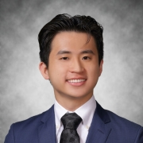

Biography 
Russell is a strategic, assertive, big picture thinker who thrives on building deep relationships. He has cultivated differentiated sectoral perspectives in healthcare and AI, with previous stints at Johnson & Johnson (AI for robotic surgery), Stanford Medicine (AI for cancer survival), and at a Michigan-based test prep company (writing mock MCAT exams).
Currently, Russell serves on the American Statistical Association Committee on Scientific Freedom and Human Rights and the Yale Advisory Committee on Investor Responsibility, where he makes recommendations for the voting of endowment stocks at shareholder meetings.
Previously, he was Director of the Yale Undergraduate Organizations Funding Committee, where he was responsible for disbursing $400K to 600 student organizations.
Russell is pursuing a BS in Electrical Engineering and Computer Science and Molecular Biophysics and Biochemistry at Yale.